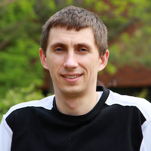
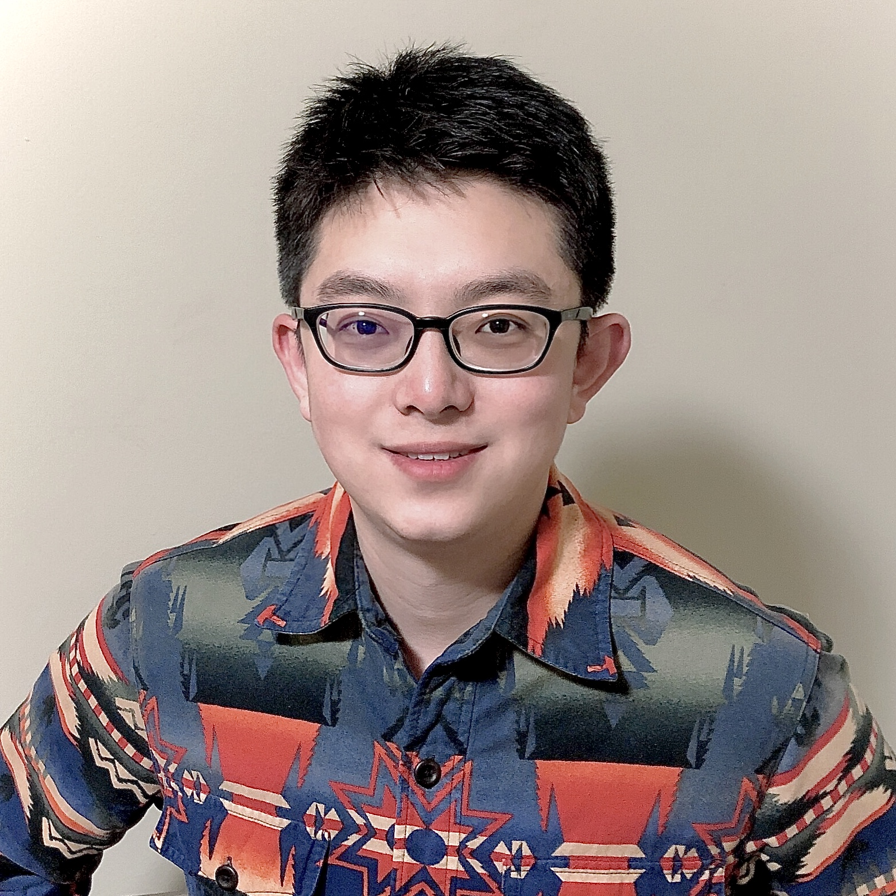
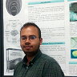
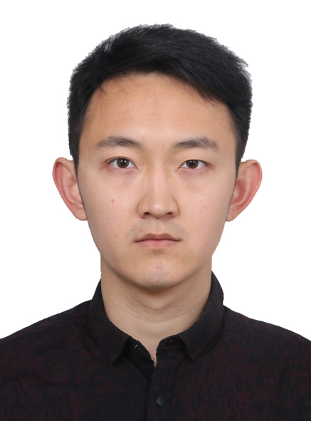

NeTS: Small: Collaborative Research: Cooperative Interference-Embracing Communication in Multi-Hop Wireless Networks
Project period: 9/1/2017-8/31/2021
Welcome to the web page of our research project: "NeTS: Small: Collaborative Research: Cooperative Interference-Embracing Communication in Multi-Hop Wireless Networks". This website is created and maintained to disseminate and share research results and other information related to the project.
Project Description
While the proliferation of wireless devices and their Internet-centered applications have brought forth numerous wireless services, current wireless technologies are unable to meet the increasing communication demand caused by the huge number of wireless devices and the scarcity of available radio spectrum. The proposed research will make a concrete step towards bridging this gap by developing new communication algorithms and protocols for wireless networks, specifically multi-hop wireless networks. Multi-hop communication brings many benefits such as enlarged network coverage, reduced radio transmit power, and relaxed requirements for network infrastructure, yet interference severely degrades network performance. This project investigates this fundamental issue by developing practical approaches to managing interference in multi-hop wireless networks, with the objective of maximizing their throughput performance. The success of this project will advance the field's knowledge of wireless system design and implementation, significantly improve network throughput performance, and enlarge the network communication coverage, yielding ubiquitous high data rate wireless services. The project will also provide opportunities for research training for underrepresented students at undergraduate and graduate levels, and the results from this project will be widely disseminated through high-profile tutorials, talks, and publications.
The goal of this project is to develop novel, practical, and foundational interference-embracing solutions to improve the throughput of multi-hop wireless networks by leveraging recent advances in physical-layer techniques, and to evaluate such solutions using real-world implementations. Focusing on theory, protocol design, and system prototyping for interference management technologies, this project presents a comprehensive plan to advance interference management in multi-hop wireless networks, including interference cancellation, interference alignment, and interference neutralization. In addition to significantly advancing interference management techniques for multi-hop wireless communications, this project will provide training opportunities for students spanning signal processing, optimization, algorithmic development, and networking infrastructure research; support talented female and underrepresented Ph.D. students in the completion of their doctoral studies; result in the dissemination of research results through high-profile tutorials, talks, and publications; and integrate research results into the development of new courses at both the University of Louisville and Michigan State University.
Personnel
Principal Investigators
|
Dr. Huacheng Zeng (PI) Assitant Professor Department of Electrical and Computer Engineering University of Louisville Homepage: http://www.ece.louisville.edu/hzeng/index.html |
|

|
Dr. Qiben Yan (PI) Assitant Professor Department of Computer Science and Engineering Michigan State University Homepage: http://cse.msu.edu/~qyan/ 
|
Graduate Students
|  |
Nikolay Ivanov Michigan State University |
|  |
Yuanda Wang Michigan State University |

|
Jianzhi Lou Michigan State University |
|  |
Adnan Quadri University of Louisville |
|  |
Shichen Zhang University of Louisville |
Publications
SDR Receiver Using Commodity WiFi via Physical-Layer Signal Reconstruction Woojae Jeong, Jinhwan Jung, Yuanda Wang, Shuai Wang, Seokwon Yang, Qiben Yan, Yung Yi, Song Min Kim International Conference on Mobile Computing and Networking (MobiCom 2020) London, United Kingdom, September 21-25, 2020. BibTex (Acceptance ratio: 16.1%)
A practical spectrum sharing scheme for cognitive radio networks: Design and experiments [PDF]
P. Kheirkhah Sangdeh H. Pirayesh, A. Quadri and H. Zeng,
IEEE/ACM Transactions on Networking, 2020.
TCCI: Taming Co-Channel Interference for Wireless LANs [PDF]
A. Quadri*, H. Pirayesh, P. Kheirkhah Sangdeh, and H. Zeng,
ACM MobiHoc, 2020. [Acceptance rate: 15%]
Coexistence of Wi-Fi and IoT Communications in WLANs [PDF]
H. Pirayesh, P. Kheirkhah Sangdeh, and H. Zeng,
IEEE Internet of Things Journal, 2020.
A practical downlink NOMA scheme for wireless LANs [PDF]
P. Kheirkhah Sangdeh, H. Pirayesh, Q. Yan, K. Zeng, W. Lou, and H. Zeng,
IEEE Transactions on Communications, vol. 68, no. 4, pp. 2236–2250, Jan 2020.
A Real-Time mmWave Communication Testbed with Phase Noise Cancellation [PDF] [DEMO]
A. Quadri, H. Zeng, and Y. T. Hou,
IEEE Workshop on Computer and Networking Experimental Research using Testbeds (CNERT), 2019.
EE-IoT: An energy-efficient IoT communication scheme for WLANs [PDF]
H. Pirayesh, P. Kheirkhah Sangdeh, and H. Zeng,
IEEE Infocom 2019. [Acceptance rate: 19.7%]
A practical underlay spectrum sharing scheme for cognitive radio networks [PDF] [DEMO]
P. Kheirkhah Sangdeh, H. Pirayesh, H. Zeng, and H. Li,
IEEE Infocom 2019. [Acceptance rate: 19.7%]
On multicast throughput in multi-hop MIMO networks with interference alignment [PDF]
H. Zeng, X. Qin, X. Yuan, F. Tian, Y. T. Hou, W. Lou, S. F. Midkiff,
IEEE Transactions on Vehicular Technology, vol. 67, no. 7, pp. 6627–6641, July 2018.
Cooperative interference neutralization in multi-hop wireless networks, [PDF]
H. Zeng, X. Qin, X. Yuan, Y. Shi, Y. T. Hou, and W. Lou,
IEEE Transactions on Communications, vol. 66, no. 2, pp. 889–903, Feb. 2018.
Uplink MU-MIMO in asynchronous wireless LANs [PDF] [DEMO]
H. Zeng, H. Li, and Q. Yan,
ACM MobiHoc 2018. [Acceptance rate: 16.8%]
Demo abstract: An anti-jamming wireless communication system [PDF] [DEMO]
H. Zeng,
IEEE Infocom 2018.
Broader Impacts
Year 3 – Curriculum development by integrating the research results: PI Yan integrated the research materials to enrich the curriculum. He teaches the wireless communication courses in CSE department. The CSE 824 “Advanced Computer Networking and Communications” course is a graduate-level class in which students will learn communication networks. This year, the PI has restructured the courses to focus on the topics of wireless communication networks. The topics covered include wireless network architectures, wireless channels, OFDM, MIMO systems, software-defined radios, cellular networks, interference management, WiFi, and IoT. The PI also introduced the interference issues in wireless networks to the undergraduate students in CSE 422 when discussing the wireless and mobile networking, and pointed the students to the state-of-the-art research outcomes in this area. A group of undergraduate students undertook a mini course project on jamming attacks towards WiFi networks, during which they explored the interference issues caused by both benign and malicious actors in the wireless networks.
Year 3 – Engage undergraduate students in research: PI Zeng engaged an undergradate student (Nathan Schimpf, a senior-year undergraduate student in the ECE department) in this project. Nathan worked on interference cancellation techinques in WiFi networks and developed a signal processing component to tackle unknown interference in the absence of inter-network cooperation. He is currently working on the implementation of interference techniques on an FPGA SDR testbed. His work has led to an award of $2,500 from the University of Louisville NSF I-Corps Site program.
Year 3 – Train high-school teachers in research via RET Site program: In the summer of 2019, PI hosted two high-school teachers (Mr. Steven Martell and Ms. Jessica Elliott from Henry County High School at Louisville) to learn wireless networking and big data technologies for six weeks. The two teachers were fully exposed to our research projects and group meetings. They have extended the knowledge gained in this project to their classrooms and passed their knowledge to high-school students. More information can be found here.
Year 2 – Enrich K-12 science education: During the STEM outreach event organized by University Museum, PI Yan performed live demo and short presentations of SIC and ultrasonic communication technology for about 200 Lincoln Public Schools and Aurora Public Schools science teachers in the University of Nebraska State Museum. The goal is to enrich the public schools’ curriculum and make long-lasting impacts to Lincoln's science education.
Year 2 – Train four undergraduate students through the CAPSTONE program: In the spring semester of 2018, PI Zeng hosted a team of four undergraduate students (Sam Bibelhauser, Michael March, Tyler McLemore, Joseph Urda) to conduct research in this project. The four students were trained to learn signal and protocol design in IEEE 802.11p-based wireless systems. The four students were trained to understand interference management in wireless networks. The four students were further trained to implement new signal processing modules on software-defined radio (SDR) wireless testbed. In the end of this CAPSTONE program, the four students successfully designed a cancellation technique to tackle mutual interference between uncoordinated transceivers; the four students successfully implemented a new interference cancellation technique on GNURadio-USRP2 wireless testbed and tested it in real-world vehicular wireless environments. A video of demonstrating our on-road test can be found here.
Year 2 – Develop a new graduate course ‘‘ECE 600-02: Wireless Communication Systems’’: Based on the research results from this project, PI Zeng developed a new graduate-level course ‘‘ECE 600-02: Wireless Communication Systems,’’ which has received a very positive feedback from students in the ECE department. A key component of this course is to cover existing and future interference management techniques in wireless networks and lay out the promising research directions in this field. The research results from this project are perfectly suited for this topic and have been integrated into the course modules as well as homeworks. The wireless testbed, along with the developed interference management techniques, has been used to demonstrate the importance of interference mangement in wireless networks to students in classroom.
Year 1 – Train five undergraduate students through the CAPSTONE program: In 2017, PI Zeng hosted a team of five undergraduate students (Sheldon Burks, Kalan Skiff, Chance Mann, Greyson Asthon, Jacob Vittitow) to conduct research in this project. The five students worked in PI Zeng's research laboratory throughout a semester on implementing an OFDM wireless systems, attending weekly group meetings, and writing a technical report to document their findings. The students gained rich experience with wireless system implementation and were fully exposed in the cutting-edge wireless technologies in wireless networking infrastructure. Of these five students, four enrolled in the selective course ‘‘ECE 600-02: Wireless Communication Systems’’ offered by PI Zeng to further learn the knowledge of wireless networking.
Year 1 – Showcase novel wireless applications to high-school students via Speed School's E-EXPO: Speed School Student Council (SSSC) annually hosts open house to showcase the various departments, labs/facilities, and student societies/organizations, to inspire and encourage younger students to explore the many fields of engineering, and to promote entrepreneurial opportunities and local start up companies to the Louisville community. Taking advantage of this outreach program, PI Zeng invited high-school students in Louisville area to visit his research lab and showcased wireless connections to access high-speed Internet and novel wireless applications.
Other Products
A Practical Spectrum Sharing Solution for Real-World Wireless Systems
As the proliferation of mobile devices has led to an ever-growing demand for wireless Internet services, the spectrum shortage issue becomes increasingly severe and spectrum sharing is regarded as a promising approach to addressing the spectrum shortage issue. In this paper, we propose a practical underlay spectrum sharing scheme for cognitive radio networks (CRNs) where the primary users are oblivious to the secondary users. The key components of our scheme are two MIMObased interference cancellation (IC) techniques to handle crossnetwork interference on the secondary network side. The first one is a blind beamforming technique for secondary transmitters. This IC technique allows a secondary transmitter to nullify its generated interference for primary users without requiring channel state information (CSI). The second one is a blind interference cancellation (BIC) technique for secondary receivers. This IC technique enables a secondary receiver to decode its desired signal in the presence of strong unknown interference from primary transmitters. Based on these two MIMO-based IC techniques, we develop a MAC protocol for the secondary network to enable underlay spectrum sharing in CRNs. We have implemented the proposed underlay spectrum sharing scheme on a GNURadio-USRP2 wireless testbed. Experimental results show that the secondary users can achieve an average of 1 bitsHz spectrum efficiency without degrading the performance of the primary users in a real-world office building environment.
Demo: Enabling jamming-resilient wireless communications using MIMO-based interference cancellation techniques
This demonstration presents a real-time anti-jamming MIMO-OFDM wireless communication system that consists of a transmitter, a receiver, and a constant wideband high-power radio jammer. The key component of our design is a new PHY for the receiver, which can mitigate jamming signal and recover the desired signal even if it has no knowledge of the jamming signal. We demonstrate using National Instruments (NI) USRP devices that real-time wireless communication between a transmitter and a receiver can be enabled in the presence of various wideband high-power jamming attacks.
Demo: Enabling uplink MU-MIMO transmission in asynchronous wireless networks using interference cancellation techniques
In wireless LANs (WLANs), network-wide time and frequency synchronization among user devices is widely regarded as a necessity for uplink MU-MIMO. Therefore, to enable uplink MU-MIMO in 802.11ax, dedicated MAC protocols (e.g., trigger frame and timing advance mechanism) have been employed to synchronize user devices in the time and frequency domains. Such MAC protocols increase not only network complexity but also communication overhead. In this demo, we show that the time and frequency synchronization among user devices is not a necessity for uplink MU-MIMO in WLANs. We developed a practical uplink MU-MIMO solution which does not require timing and clock frequency alignments among user devices. The key component in our solution is a new PHY design for AP’s receiver, which can decode the concurrent signals from multiple asynchronous user devices. Experimental results show that uplink MU-MIMO is feasible in asynchronous wireless networks.
Note: Any opinions, findings and conclusions or recommendations expressed on this web page are those of the author(s) and do not necessarily reflect the views of the National Science Foundation (NSF).